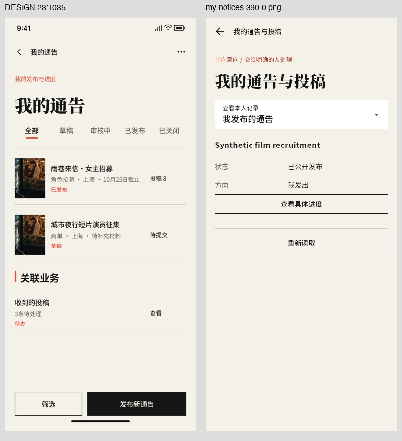
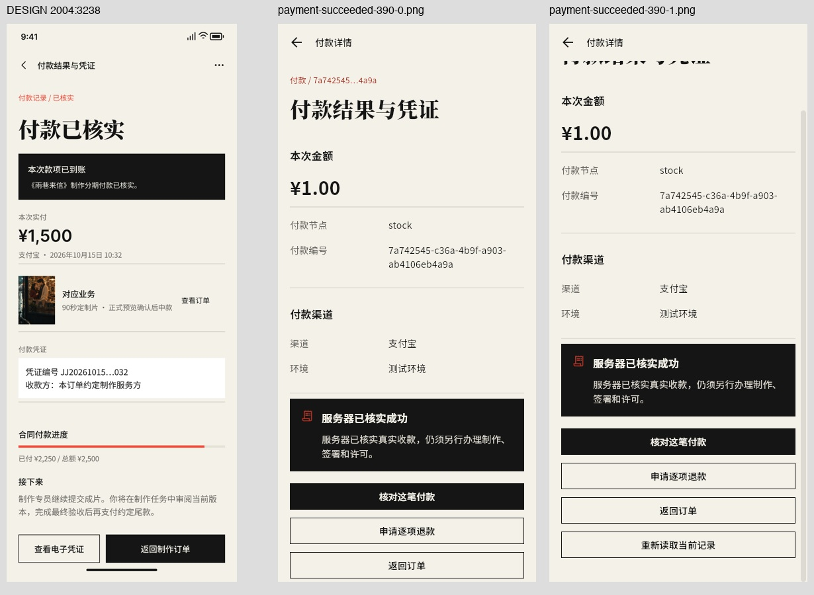
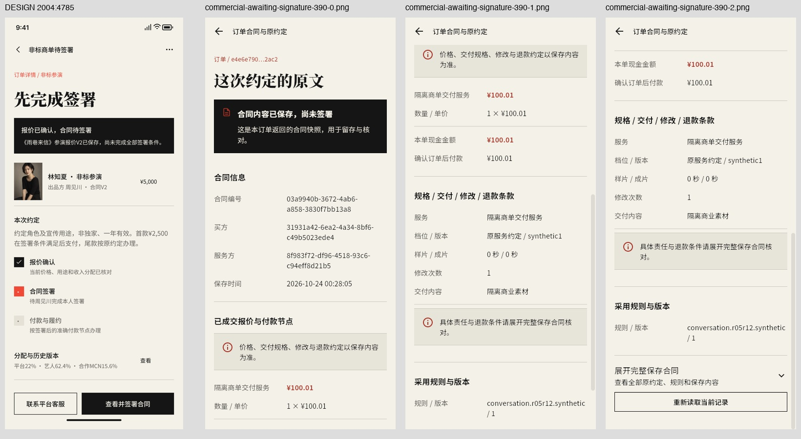
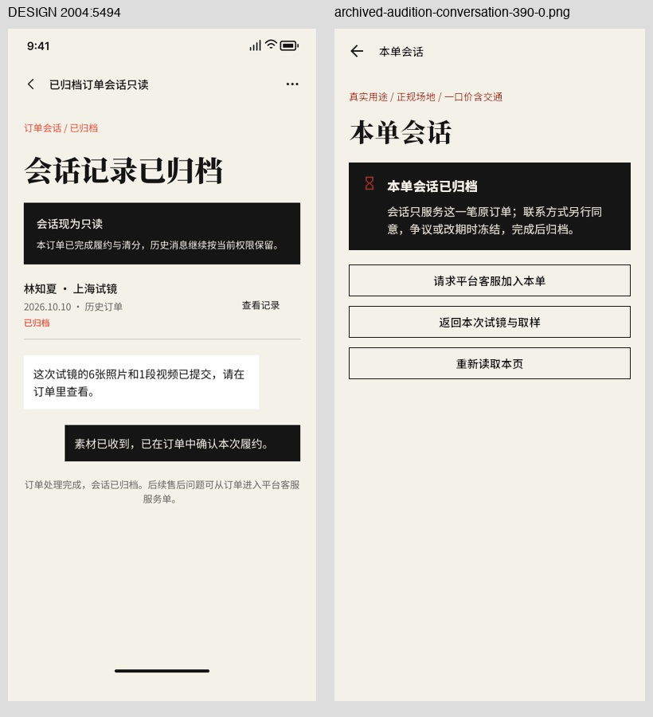
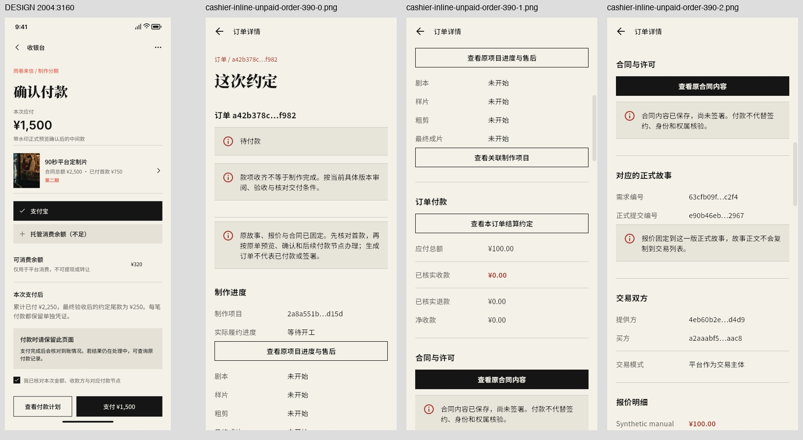
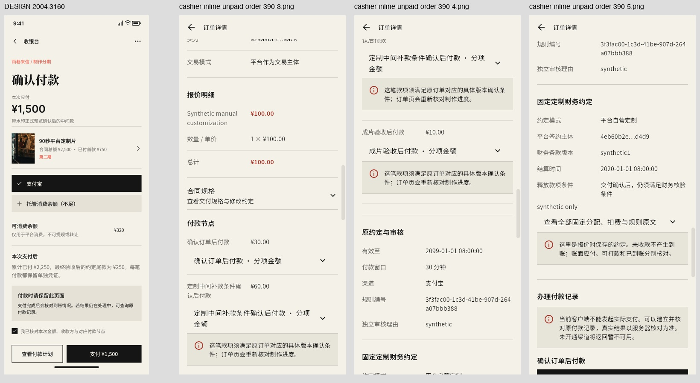
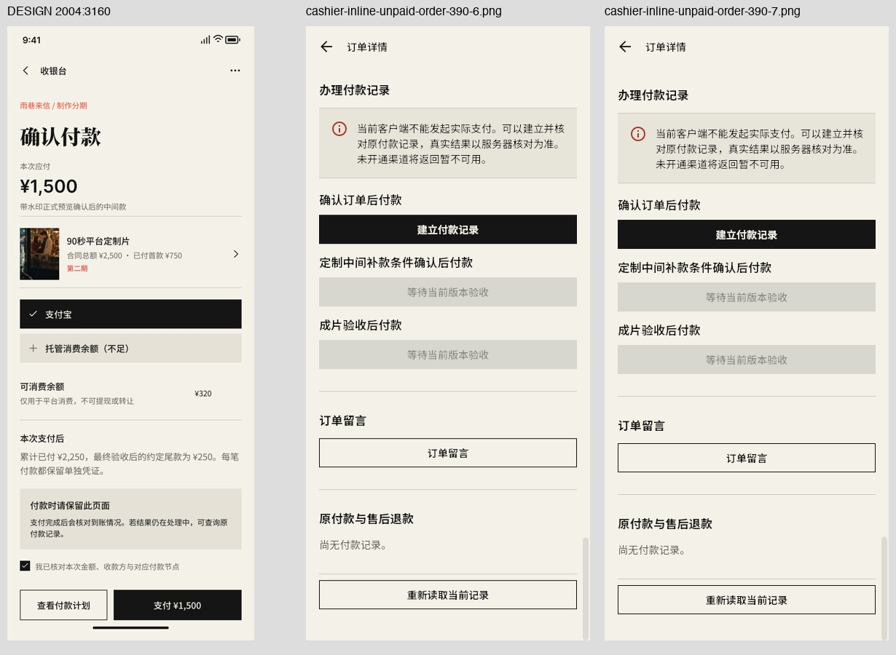
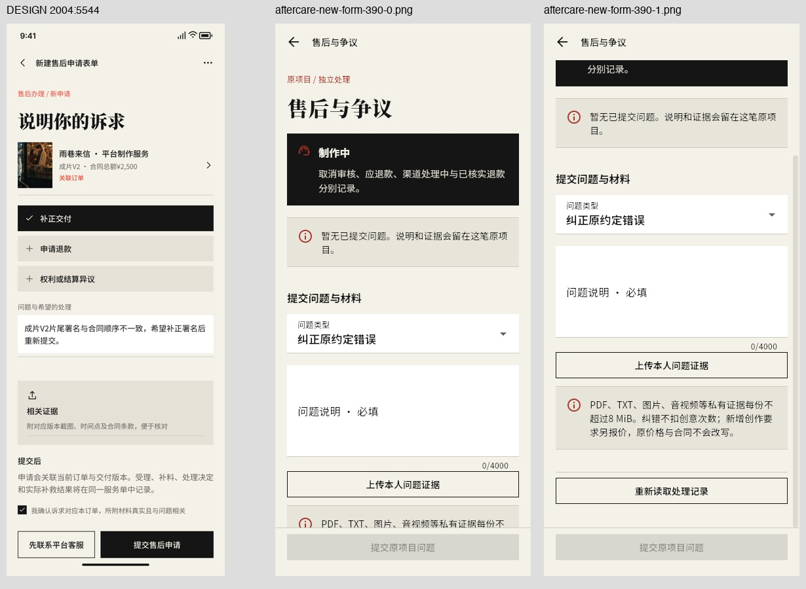

来源 e4853519…；仅本地合成记录。8张联系图已逐张目视复核；无业务写入。收银台是内联关联，商单仅未签合同快照；缺真实状态的6节点没有替代截图。
逐图复核 · 无凭据GET核对日志 · r05r12原始结果 · delivery原始结果
| 原稿节点 | 当前结论 | 差异/边界 |
|---|---|---|
| 23:1035 21 / 我的通告 | NEW_READ_ONLY_EVIDENCE_REVIEWED | 当前有1条已发布记录；未补原图海报、草稿/审核/关闭样例或关联计数。采用本人记录选择器，未实现原图顶部各状态tab与底部新建区的完整布局。 |
| 2004:3238 58 / 付款结果与凭证 | NEW_READ_ONLY_EVIDENCE_REVIEWED | 这是隔离付款事实，不是正式渠道验收；未提供原图电子凭证独立详情、缩略封面或整单付款进度。截图中stock为原节点key，不把它宣称已转为对应业务中文。未点击核对、退款或付款。 |
| 2004:4785 S02 / 非标商单待签署 | NEW_READ_ONLY_EVIDENCE_REVIEWED | 该legacy_compatible商单订单已经PAID、offer为ACCEPTED；本次只证实未签署合同快照，不能当作原图先完成签署再付款的S02全状态门禁验收；没有签署按钮或外部签章结果。合同全文折叠未展开。 |
| 2004:5494 S13 / 已归档订单会话只读 | NEW_READ_ONLY_EVIDENCE_REVIEWED | 消息GET真实返回空列表；不能填原图聊天气泡或宣称有消息历史已验收。客服按钮未点击，归档下仍有独立服务入口不代表自由聊天开放。 |
| 2004:3160 57 / 收银台 | NEW_READ_ONLY_EVIDENCE_REVIEWED | 原收银台是独立付款确认页；当前是订单内联办理付款记录适配，只能关联，不能标独立收银台完成。客户端实际支付未接通，未点击建立付款，也没有生成PENDING/UNKNOWN等新状态。 |
| 2004:5544 S14 / 新建售后申请表单 | NEW_READ_ONLY_EVIDENCE_REVIEWED | 通用售后原稿在当前业务映射为制作项目问题表单；本次未填写说明、上传材料或提交，因此不证明客服受理、退款或补交结果。当前项目已全额付款但未完成正式交付；没有用它伪称已交付售后。 |
| 2004:935 30 / 邀约意向卡编辑 | QA_INVITATION_CONTEXT_MISSING | 既有编辑表单要求本人原SUBMISSION且submission.kind=INVITATION；GET两个相关主体的全部列表仅PROFILE且next_cursor=null。前轮notices_buyer使用旧库原INVITATION UUID，不可复制到新库；PROFILE不满足当前准入。 |
| 2004:5765 S17 / 试镜拒单 · 全额退款处理中 | QA_REFUND_REQUIRED_BOOKING_MISSING | 现有5个BOOKING分别READY_TO_PAY/AWAITING_ACCEPTANCE/ACCEPTED/DELIVERED/FULFILLED，退款目录为空；不存在拒单REFUND_REQUIRED。 |
| 2004:5836 S18 / 试镜拒单 · 全额退款已核实 | QA_REFUNDED_BOOKING_MISSING | 现有5个BOOKING没有REFUNDED，refund_is_verified均false，原试镜退款列表为空。 |
| 2004:3652 63 / 平台制作服务详情 | FRONTEND_PUBLIC_SERVICE_DETAIL_PAGE_MISSING | 当前仅新建定制需求和本人原需求的人工样片约定路由；没有独立平台制作服务详情页。 |
| 2004:5045 S06 / 视频商品审核退回 | QA_REJECTED_STOCK_LISTING_MISSING_WITH_FRONTEND_REVISION_GAP | 正确GET /stock/listings返回6条：4 LISTED、1 UNLISTED、1 IN_REVIEW，next_cursor=null；没有双审REJECTED原单。 |
| 2004:5111 S07 / 主角光环审核通过 | QA_L2_APPROVED_HALO_MISSING | 当前艺人HALO全量目录仅1条APPROVED level=1；并非所要求L2通过状态。 |







